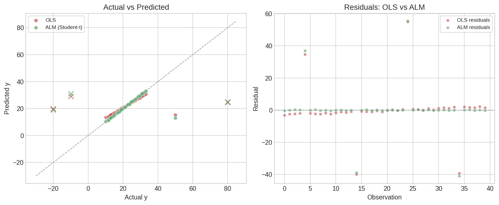
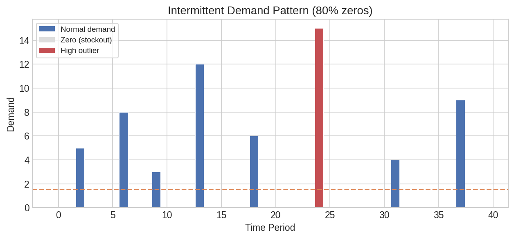
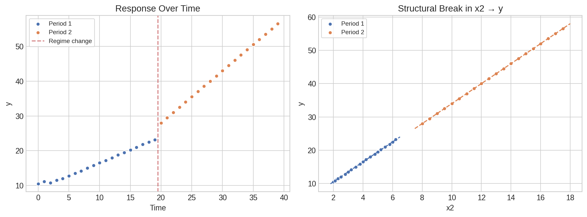

Special Models: ALM, Demand Classification & Dynamic Regression¶
Three specialized modeling scenarios that go beyond ordinary least squares: robust regression for data with outliers, automatic demand classification for inventory planning, and dynamic regression for time-varying relationships.
Setup¶
Robust Regression with ALM¶
When data contains outliers, OLS estimates are heavily distorted. The Augmented Linear Model (ALM) fits regression under alternative error distributions — Student's t and Laplace have heavier tails, making them naturally resistant to extreme values.
df_alm = pl.DataFrame({
"y": [10.2, 12.1, 11.5, 13.8, 50.0, 14.2, 11.8, 12.5, 15.1, 13.0,
16.5, 18.2, 17.0, 19.5, -20.0, 20.1, 17.8, 18.5, 21.2, 19.0,
22.5, 24.1, 23.0, 25.5, 80.0, 26.2, 23.8, 24.5, 27.1, 25.0,
28.5, 30.1, 29.0, 31.5, -10.0, 32.2, 29.8, 30.5, 33.1, 31.0],
"x1": [1.0, 1.5, 1.2, 2.0, 1.8, 2.2, 1.3, 1.7, 2.5, 1.9,
3.0, 3.5, 3.2, 4.0, 3.8, 4.2, 3.3, 3.7, 4.5, 3.9,
5.0, 5.5, 5.2, 6.0, 5.8, 6.2, 5.3, 5.7, 6.5, 5.9,
7.0, 7.5, 7.2, 8.0, 7.8, 8.2, 7.3, 7.7, 8.5, 7.9],
"x2": [2.0, 2.5, 2.2, 3.0, 2.8, 3.2, 2.3, 2.7, 3.5, 2.9,
4.0, 4.5, 4.2, 5.0, 4.8, 5.2, 4.3, 4.7, 5.5, 4.9,
6.0, 6.5, 6.2, 7.0, 6.8, 7.2, 6.3, 6.7, 7.5, 6.9,
8.0, 8.5, 8.2, 9.0, 8.8, 9.2, 8.3, 8.7, 9.5, 8.9],
})
OLS vs ALM Comparison¶
First, see how OLS struggles with the outliers at 50.0, -20.0, 80.0, and -10.0:
ols_result = df_alm.select(
ps.ols("y", "x1", "x2").alias("model")
)
ols = ols_result["model"][0]
print(f"OLS: R²={ols['r_squared']:.4f}, RMSE={ols['rmse']:.2f}")
print(f" Intercept={ols['intercept']:.4f}, Coefficients={ols['coefficients']}")
Expected output:
Now fit ALM with a Student's t distribution, which down-weights outliers:
alm_result = df_alm.select(
ps.alm("y", "x1", "x2", distribution="student_t").alias("model")
)
model = alm_result["model"][0]
print(f"ALM (student_t): Intercept={model['intercept']:.4f}")
print(f" Coefficients: {model['coefficients']}")
print(f" AIC: {model['aic']:.2f}, N: {model['n_observations']}")
Expected output:
Compare with Laplace distribution (also robust):
alm_laplace = df_alm.select(
ps.alm("y", "x1", "x2", distribution="laplace").alias("model")
)
lap = alm_laplace["model"][0]
print(f"ALM (laplace): Intercept={lap['intercept']:.4f}")
print(f" Coefficients: {lap['coefficients']}")
Expected output:
Coefficient Summary¶
coef_table = (
df_alm.select(
ps.alm_summary("y", "x1", "x2", distribution="student_t").alias("coef")
)
.explode("coef")
.unnest("coef")
)
print(coef_table)
Expected output:
┌───────────┬───────────┬───────────┬───────────┬─────────┐
│ term ┆ estimate ┆ std_error ┆ statistic ┆ p_value │
╞═══════════╪═══════════╪═══════════╪═══════════╪═════════╡
│ intercept ┆ 0.0 ┆ NaN ┆ NaN ┆ NaN │
│ x1 ┆ -4.618 ┆ NaN ┆ NaN ┆ NaN │
│ x2 ┆ 7.606 ┆ NaN ┆ NaN ┆ NaN │
└───────────┴───────────┴───────────┴───────────┴─────────┘
Predictions¶
predictions = (
df_alm.with_columns(
ps.alm_predict("y", "x1", "x2", distribution="student_t").alias("pred")
)
.unnest("pred")
)
print(predictions.select("y", "alm_prediction").head(5))
Expected output:
┌──────┬────────────────┐
│ y ┆ alm_prediction │
╞══════╪════════════════╡
│ 10.2 ┆ 10.594 │
│ 12.1 ┆ 12.088 │
│ 11.5 ┆ 11.192 │
│ 13.8 ┆ 13.582 │
│ 50.0 ┆ 12.984 │
└──────┴────────────────┘
Note how ALM correctly ignores the outlier at y=50.0 — the prediction is 12.98, close to its neighbors.
Formula Interface¶
The same model can be fit using R-style formula syntax:
alm_formula_result = df_alm.select(
ps.alm_formula("y ~ x1 + x2", distribution="student_t").alias("model")
)
fm = alm_formula_result["model"][0]
print(f"ALM formula (student_t): Intercept={fm['intercept']:.4f}")
print(f" Coefficients: {fm['coefficients']}")
print(f" AIC: {fm['aic']:.2f}")
Expected output:

Plot code
import matplotlib.pyplot as plt
import numpy as np
fig, axes = plt.subplots(1, 2, figsize=(12, 5))
# Left panel: Actual vs Predicted
ax = axes[0]
ax.scatter(predictions["y"], predictions["alm_prediction"],
s=50, color="#55A868", edgecolor="white", label="ALM (Student-t)")
ols_pred = df_alm.with_columns(
ps.ols_predict("y", "x1", "x2").alias("pred")
).unnest("pred")
ax.scatter(ols_pred["y"], ols_pred["ols_prediction"],
s=50, color="#C44E52", edgecolor="white", alpha=0.6, label="OLS")
lim = [-30, 90]
ax.plot(lim, lim, ls="--", color="#999", lw=1)
ax.set_xlabel("Actual y")
ax.set_ylabel("Predicted y")
ax.set_title("Actual vs Predicted")
ax.legend()
# Right panel: Residuals
ax = axes[1]
alm_resid = predictions["y"] - predictions["alm_prediction"]
ols_resid = ols_pred["y"] - ols_pred["ols_prediction"]
idx = np.arange(len(alm_resid))
ax.bar(idx - 0.2, ols_resid.to_list(), 0.4, alpha=0.6, color="#C44E52", label="OLS")
ax.bar(idx + 0.2, alm_resid.to_list(), 0.4, alpha=0.6, color="#55A868", label="ALM")
ax.axhline(0, color="#999", ls="--", lw=1)
ax.set_xlabel("Observation Index")
ax.set_ylabel("Residual")
ax.set_title("Residuals: OLS vs ALM")
ax.legend()
plt.tight_layout()
plt.savefig("spec_alm_comparison.png", dpi=150)
Demand Classification (AID)¶
The Automatic Identification of Demand (AID) classifier analyzes demand time series — common in supply chain and inventory management. It detects whether demand is intermittent, identifies the best-fitting distribution, and flags anomalies like stockouts and outliers.
df_aid = pl.DataFrame({
"demand": [0.0, 0.0, 5.0, 0.0, 0.0, 0.0, 8.0, 0.0, 0.0, 3.0,
0.0, 0.0, 0.0, 12.0, 0.0, 0.0, 0.0, 0.0, 6.0, 0.0,
0.0, 0.0, 0.0, 0.0, 15.0, 0.0, 0.0, 0.0, 0.0, 0.0,
0.0, 4.0, 0.0, 0.0, 0.0, 0.0, 0.0, 9.0, 0.0, 0.0],
})
Classification¶
result = df_aid.select(
ps.aid("demand").alias("classification")
)
c = result["classification"][0]
print(f"Demand type: {c['demand_type']}")
print(f"Is intermittent: {c['is_intermittent']}")
print(f"Is fractional: {c['is_fractional']}")
print(f"Distribution: {c['distribution']}")
print(f"Mean: {c['mean']:.2f}")
print(f"Variance: {c['variance']:.2f}")
print(f"Zero proportion: {c['zero_proportion']:.2f}")
print(f"N: {c['n_observations']}")
print(f"Has stockouts: {c['has_stockouts']}")
print(f"Is new product: {c['is_new_product']}")
print(f"Stockout count: {c['stockout_count']}")
print(f"High outliers: {c['high_outlier_count']}")
Expected output:
Demand type: intermittent
Is intermittent: True
Is fractional: False
Distribution: negative_binomial
Mean: 1.55
Variance: 12.60
Zero proportion: 0.80
N: 40
Has stockouts: True
Is new product: False
Stockout count: 12
High outliers: 1
Anomaly Detection¶
The aid_anomalies function returns per-row flags, useful for annotating the original data:
anomalies = (
df_aid.with_columns(
ps.aid_anomalies("demand").alias("flags")
)
.unnest("flags")
)
print(anomalies.select("demand", "stockout", "high_outlier").head(10))
Expected output:
┌────────┬──────────┬──────────────┐
│ demand ┆ stockout ┆ high_outlier │
╞════════╪══════════╪══════════════╡
│ 0.0 ┆ true ┆ false │
│ 0.0 ┆ true ┆ false │
│ 5.0 ┆ false ┆ false │
│ 0.0 ┆ true ┆ false │
│ 0.0 ┆ true ┆ false │
│ 0.0 ┆ true ┆ false │
│ 8.0 ┆ false ┆ false │
│ 0.0 ┆ true ┆ false │
│ 0.0 ┆ true ┆ false │
│ 3.0 ┆ false ┆ false │
└────────┴──────────┴──────────────┘
# Summary of anomalies
stockout_total = anomalies["stockout"].sum()
outlier_total = anomalies["high_outlier"].sum()
print(f"Total stockouts: {stockout_total}")
print(f"Total high outliers: {outlier_total}")
Expected output:

Plot code
import matplotlib.pyplot as plt
import numpy as np
fig, ax = plt.subplots(figsize=(10, 4))
t = np.arange(len(df_aid))
demand = df_aid["demand"].to_list()
# Color bars by type
colors = []
for d, s, o in zip(demand, anomalies["stockout"].to_list(),
anomalies["high_outlier"].to_list()):
if o:
colors.append("#C44E52") # outlier
elif s:
colors.append("#CCCCCC") # stockout (zero)
else:
colors.append("#4C72B0") # normal demand
ax.bar(t, demand, color=colors, edgecolor="white", linewidth=0.5)
ax.axhline(df_aid["demand"].mean(), color="#DD8452", ls="--", lw=1.5,
label=f"Mean = {df_aid['demand'].mean():.2f}")
ax.set_xlabel("Time Period")
ax.set_ylabel("Demand")
ax.set_title("Intermittent Demand Pattern")
ax.legend()
plt.tight_layout()
plt.savefig("spec_demand_timeline.png", dpi=150)
Dynamic Regression¶
The lm_dynamic function fits a time-varying parameter model — useful when the relationship between predictors and response shifts over time (e.g., regime changes, structural breaks). It combines multiple candidate models using pointwise information criteria weighting.
df_dyn = pl.DataFrame({
"y": [10.5, 11.2, 10.8, 11.5, 12.0, 12.8, 13.5, 14.2, 15.0, 15.8,
16.5, 17.2, 18.0, 18.8, 19.5, 20.2, 21.0, 21.8, 22.5, 23.2,
28.0, 29.5, 31.0, 32.5, 34.0, 35.5, 37.0, 38.5, 40.0, 41.5,
43.0, 44.5, 46.0, 47.5, 49.0, 50.5, 52.0, 53.5, 55.0, 56.5],
"x1": [1.0, 1.5, 1.2, 1.8, 2.0, 2.5, 3.0, 3.5, 4.0, 4.5,
5.0, 5.5, 6.0, 6.5, 7.0, 7.5, 8.0, 8.5, 9.0, 9.5,
10.0, 10.5, 11.0, 11.5, 12.0, 12.5, 13.0, 13.5, 14.0, 14.5,
15.0, 15.5, 16.0, 16.5, 17.0, 17.5, 18.0, 18.5, 19.0, 19.5],
"x2": [2.0, 2.2, 2.1, 2.3, 2.5, 2.8, 3.0, 3.2, 3.5, 3.8,
4.0, 4.2, 4.5, 4.8, 5.0, 5.2, 5.5, 5.8, 6.0, 6.2,
8.0, 8.5, 9.0, 9.5, 10.0, 10.5, 11.0, 11.5, 12.0, 12.5,
13.0, 13.5, 14.0, 14.5, 15.0, 15.5, 16.0, 16.5, 17.0, 17.5],
})
dyn_result = df_dyn.select(
ps.lm_dynamic("y", "x1", "x2").alias("model")
)
model = dyn_result["model"][0]
print(f"R²: {model['r_squared']:.4f}")
print(f"RMSE: {model['rmse']:.2f}")
print(f"Intercept: {model['intercept']:.3f}")
print(f"Coefficients: {model['coefficients']}")
Expected output:
The high R-squared with a regime change in the data (notice x2 jumps at observation 20) demonstrates the dynamic model's ability to adapt to structural breaks.

Plot code
import matplotlib.pyplot as plt
import numpy as np
fig, axes = plt.subplots(1, 2, figsize=(12, 4.5))
# Left: Actual vs time
ax = axes[0]
t = np.arange(len(df_dyn))
ax.scatter(t, df_dyn["y"].to_list(), s=30, color="#4C72B0", edgecolor="white")
ax.axvline(19.5, color="#C44E52", ls="--", lw=1.5, alpha=0.7, label="Regime change")
ax.set_xlabel("Time")
ax.set_ylabel("y")
ax.set_title("Response Variable Over Time")
ax.legend()
# Right: x2 vs y showing the structural break
ax = axes[1]
ax.scatter(df_dyn["x2"].to_list()[:20], df_dyn["y"].to_list()[:20],
s=40, color="#4C72B0", edgecolor="white", label="Period 1")
ax.scatter(df_dyn["x2"].to_list()[20:], df_dyn["y"].to_list()[20:],
s=40, color="#DD8452", edgecolor="white", label="Period 2")
ax.set_xlabel("x2")
ax.set_ylabel("y")
ax.set_title("Structural Break in x2-y Relationship")
ax.legend()
plt.tight_layout()
plt.savefig("spec_dynamic_coefs.png", dpi=150)